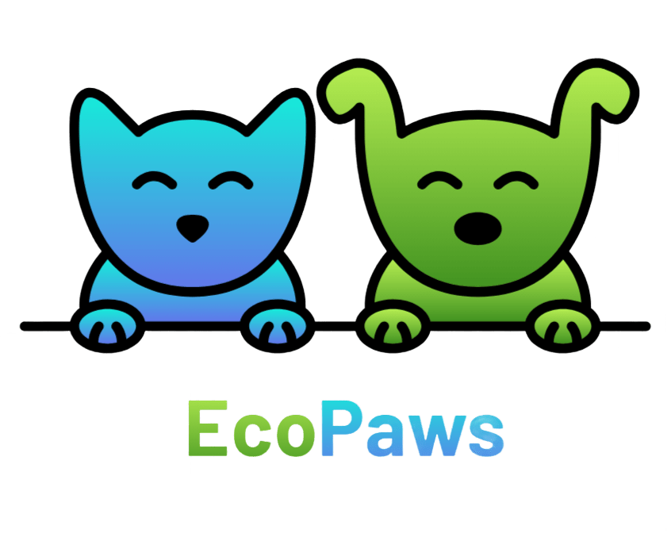
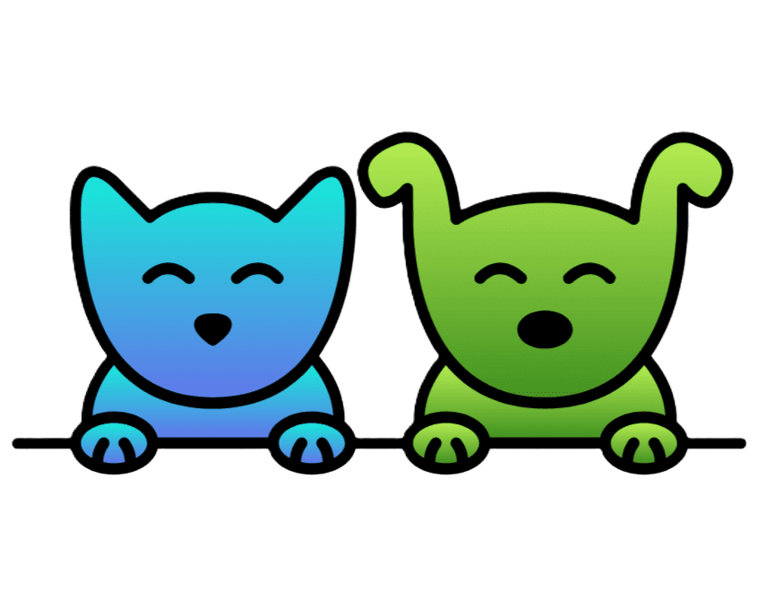
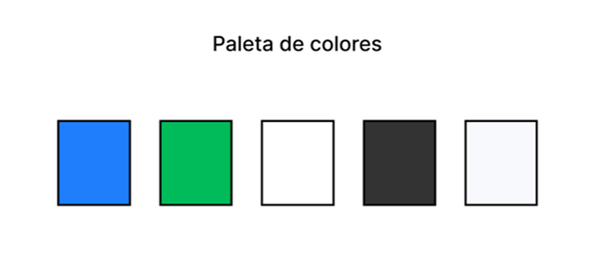
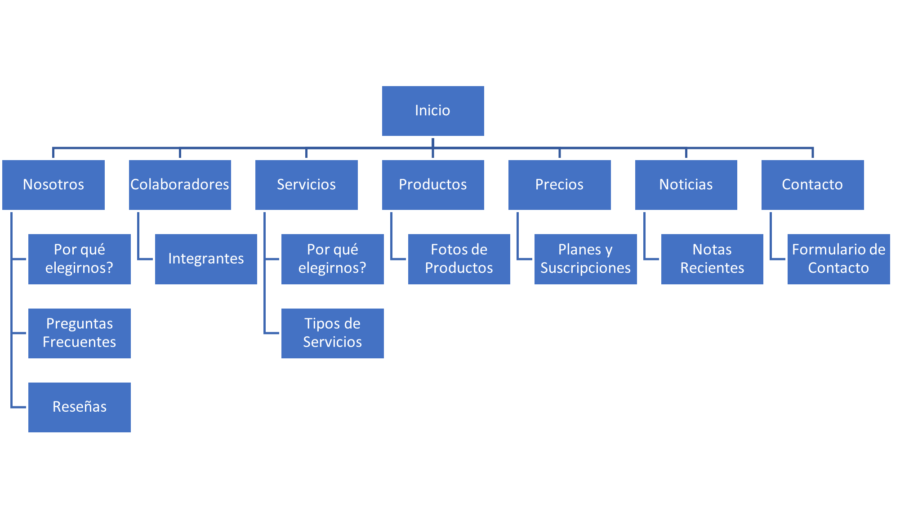

Presentación General:
En EcoPaws, nos dedicamos a brindar productos sostenibles y de alta calidad para tus mascotas. Nuestro compromiso con la protección del medio ambiente y el bienestar animal nos impulsa a crear una línea de productos cuidadosamente diseñados, fabricados con materiales reciclados y ecológicos. Desde camas hasta juguetes interactivos y accesorios de moda, cada artículo de EcoPaws está diseñado para promover un estilo de vida más sostenible y saludable para tus mascotas y el planeta que todos compartimos.
Nuestros productos están fabricados utilizando una variedad de materiales reciclados y ecológicos para minimizar su impacto en el medioambiente. Algunos de los materiales con los que fabricamos los productos son:
Materiales reciclados de plástico: Por ejemplo, botellas de plástico recicladas y otros desechos reutilizados para fabricar juguetes, camas y accesorios.
Telas recicladas: Por ejemplo, telas hechas de fibras recicladas como algodón, poliéster reciclado o tejidos orgánicos para la fabricación de camas y ropa para mascotas.
Caucho reciclado: Se utiliza para crear juguetes masticables y duraderos.
Materiales orgánicos y biodegradables: Como el cáñamo, el corcho y la madera, que se utilizan para crear collares, correas y juguetes que son respetuosos con el medio ambiente y seguros para las mascotas.
Materiales naturales renovables: Como el bambú y el sisal, que pueden usarse para fabricar rascadores, juguetes interactivos y otros accesorios para gatos.
Estos materiales permiten que EcoPaws ofrezca una amplia gama de productos sostenibles y respetuosos con el medioambiente para las mascotas, al tiempo que promueven prácticas de consumo responsables y una menor huella ecológica.
El objetivo del sitio es poder ofrecer una gama productos reciclados y sustentables con el medioambiente para las mascotas. Se trata de un sitio de comercio electrónico en el cual se ofrecen productos y servicios a través de una tienda virtual.
Acciones para atraer tráfico al sitio:
Participación en las redes sociales: Participando en conversaciones relacionadas con el nicho y compartiendo contenido relacionado a nuestros productos o bien experiencias de usuarios.
Publicidad en línea: Usando diversas herramientas, como Google Ads, anuncios en redes sociales y anuncios nativos para llegar a un público específico.
Redacción de nota periodística: Contactar a medios de comunicación online para que redacten notas sobre el proyecto y los beneficios que le trajo a los clientes usar nuestros productos.
Actividad de la institución:
EcoPaws es Empresa de productos / emprendimiento.
Ejes de ODS que aborda:
ODS 12:Producción y Consumo Responsables.
ODS 15:Vida de Ecosistemas Terrestres.
ODS 14:Vida Submarina.
ODS 9:Industria, Innovación e Infraestructura.
ODS 13:Acción por el Clima.
ODS 8:Trabajo Decente y Crecimiento Económico.
ODS 17:Alianzas para Lograr los Objetivos.
Público Objetivo:
El perfil de cliente para EcoPaws comparte un fuerte compromiso con la sostenibilidad ambiental y el bienestar de las mascotas. Se enfoca en un público unisex, que esté en el rango de edad de 18 a 55, que resida en Argentina y tenga ingresos económicos. Estas personas suelen estar en una etapa de la vida en la que tienen ingresos económicos y, en algunos casos, cuentan con más estabilidad financiera y pueden permitirse invertir en productos de mayor calidad y con un enfoque en la sostenibilidad. Algunas características del público objetivo:
Amantes de los animales y conscientes del medio ambiente.
Clientes preocupados por la salud de sus mascotas.
Consumidores comprometidos con la compra ética y sostenible.
Propietarios de mascotas que buscan productos únicos y de alta calidad.
Comunidades y organizaciones comprometidas con el medio ambiente.
Identidad Visual:
Logo:

Ícono y Favicon:

Nombre del Sitio: EcoPaws
Dominio: ProyectoEcoPaws.com.ar
Slogan: "Por un mundo más verde con patitas felices."
Paleta de Colores:
Tonos Verde: Representa la naturaleza, la sostenibilidad y el cuidado del medio ambiente. Este color resalta la misión ecológica de EcoPaws al mismo tiempo que fomenta una sensación de frescura y vida.
Blanco: Proporciona claridad, limpieza y simplicidad. Como fondo, resalta la información importante y garantiza que el sitio web sea fácil de leer y navegar.
Tonos Azules: Aporta equilibrio y calma a la paleta de colores, creando una sensación de tranquilidad y confianza.

Esta paleta de colores proporciona una sensación de armonía y tranquilidad, resalta la naturaleza ecológica de la marca y transmite una sensación de confianza y seguridad para los visitantes del sitio.
Imagen del sitio:
EcoPaws transmite una imagen de compromiso con la sostenibilidad, el cuidado del medio ambiente y el bienestar animal. Se busca dar una sensación de calidez, amabilidad y amor hacia los animales, al mismo tiempo que se hace foco en la calidad y la responsabilidad ambiental en la producción de productos para mascotas.
Descripción del sitio web:

Inicio: Contiene la presentación y una vista integral del sitio. Permite desplazarse y encontrar la información más relevante de cada sección.
Nosotros: Muestra información acerca de EcoPaws, sus principales características, algunas preguntas frecuentes que pueden tener los visitantes del sitio. Además, muestra las reseñas que han dejado los clientes.
Colaboradores: Muestra a todo el equipo de EcoPaws, su rol en la organización y una breve descripción de cada uno.
Servicios: Se brinda información acerca de todos los servicios que comercializa la empresa.
Productos: Puede observarse las imágenes de los productos que ofrece EcoPaws.
Precios: Se detallan los planes de subscripción que se ofrecen (contenido, precio, tipo de plan).
Noticias: Sección en la que se publican novedades y notas relevantes acerca de campañas de donación, eventos, reconocimientos, etc.
Contacto: Contiene el formulario de contacto para que los usuarios puedan comunicarse con EcoPaws.
Fuentes Gráficas:Todas las imágenes han sido obtenidas de Freepik.com y generadas con Dall-E (IA).
Prototipado en Figma:
Versión Desktop
Versión Mobile
Roles de los integrantes:
Diseñador UX/UI: Agustina Vittori.
Maquetador: Ignacio Finochietti.
Programador: Iván Ayala.
Comunicador Web: Leandro Zalcman.